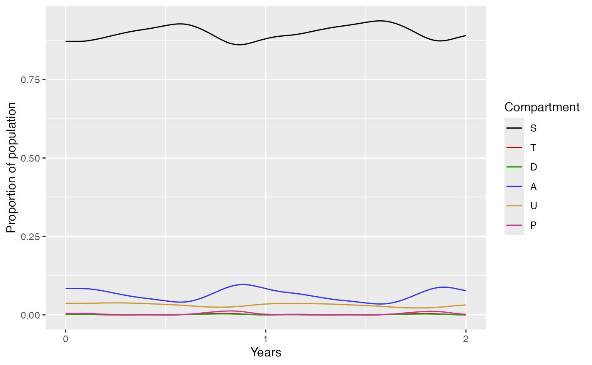

run_model_example.RmdIn this vignette we will run the simplest version of the model. This is good for getting to grips with how to run the model as well as testing that everything is working correctly.
The run_model_example function solves the basic malaria model with no interventions. It returns the following list with 2 elements:
dat - the simulation output as a list of data frames.plot - a plot of the 6 human compartments in the malaria model.As illustrated below, without specifying any function arguments, create_r_model will run a simulation for 1 year at an EIR of 10, with a treatment coverage equal to 40% for Tororo, Uganda.
library(ICDMM)
out <- run_model_example()
names(out)
#> [1] "plot" "dat"
out$plotYou can change the values of a small number of variables in the run_model_example function. To change simulation settings there are 5 optional function arguments:
age - Vector of age brackets.EIR - Numeric of annual EIR.ft - Numeric of proportion of symptomatic cases receiving treatment.admin2 - Character of admin unit.time - Numeric of length of time that the model will run for in days.For example, to simulate Thies, Senegal for a given vector of ages, at an EIR of 1, for 2 years with 60% treatment coverage:
thies <- run_model_example(age = c(0, 1, 2, 3, 4, 5, 10, 20, 40, 60),
EIR = 1,
ft = 0.6,
admin2 = "Thies",
time = 2*365)
thies$plot
Other model outputs, such as the number of suceptible adult mosquitoes, can be plotted by interacting with the dat data frame returned by run_model:
plot(thies$dat$Sv,
ylab = "Susceptible Adult Mosquitoes",
xlab = "Time (days)",
main="Number of susceptible mosquitoes",
type = "l")To run the basic model with the option of changing further parameter values or to run other versions of the model that might include further intervention methods, please read the flexible model run vignette